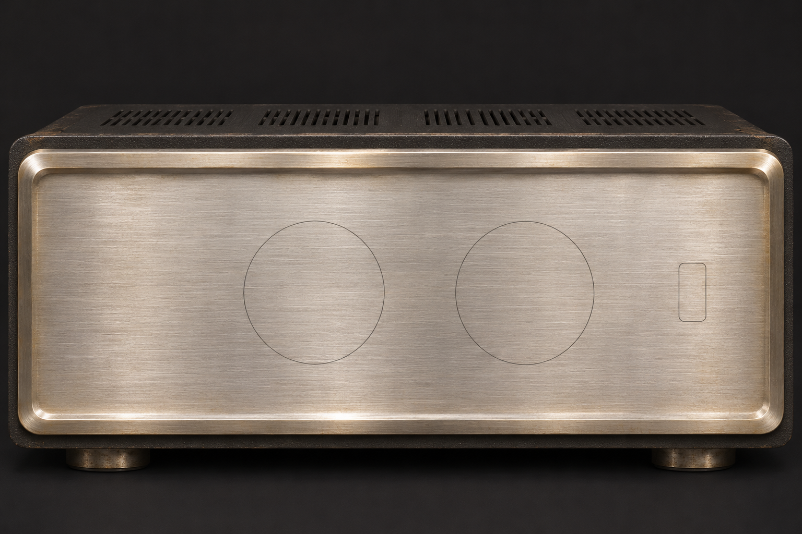

VISTAMATIONSSTEREO MASTER AMPLIFIER
VC · 73SOLID STATE
MASTER VOLUME
STEREO BALANCE
POWER
Created by Vistamations Media Division
Interactive GSAP overlays. Audio engine connection pending; these controls do not change Windows sound.